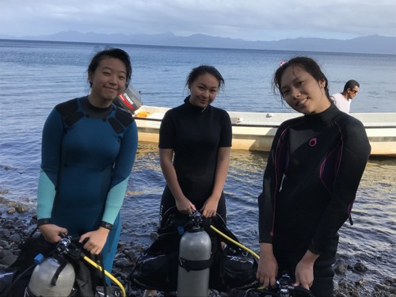
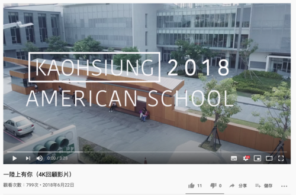
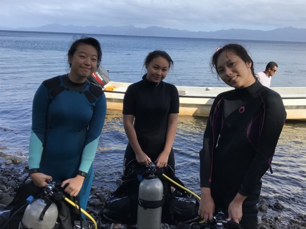
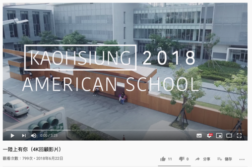

Portfolio





I am Yi-Hsuan Chu from Taiwan and an immigrant to the U.S. from 2019. I am Freshman in UC Riverside and assume I will graduate in 2023. I studied biology and chemistry in high school, at that time I wanted to become a vet, since I have a lot of experience with animals. However, I chose film and theater as my college major. I know I am not a student who can not sit on the table for seven to eight hour per day, even though I really want to help different animals and save their lives. In theatre major we spend more time on real life experience not only about lecture and theory. I really enjoy that I have a group of classmates that can bring energy and happiness to me.
I like outdoor sports. I love sunlight and enjoy having tan skin. When I have free time on the weekend I will go hiking. Fresh air, green natural, wind, small animals and sunlight can make me feel released from my life. I like forest just like I like the ocean. I have a Deep diving license, in one summer I went to Fiji for two weeks in order to learn how to dive and also see those beautiful worlds underwater. My favorite quote is “When you do something you fear most, then you can do anything”, if I can I would like to try everything in the world. Not because I like”yolo” , this word is about I do not want to regret when I get older. My new goal in college is that I want to go bungee jump or free skydiving.
Other than the weird sport, I am also a hard working person. I gave myself a plan to remider myself I need to try to join two film or theatre productions in a year. I know in American if people do not try hard to pursue their dreams and opportunities people can never be successful. My family believes kids should earn their money after they are 18 years old, so I have a part-time job in the university village near UCR. Being financially independent can make me proud of myself, since I do not need to ask my mom to give me some money.
Oh! I forget to introduce myself. I am around 167cm, to be honest I do not like this height. If I become taller or shorter I can become more special. Also, I hate pink because this color makes me think about romance and love. My favorite movie type is horror movie, I like to watch and experience those story that can make me nervous and scared.
• I have been president of the Red Cross and have organized events, fundraisers, and took care of elderly people who live alone.
• I have helped to communicate and confirm schedules with customers and other companies in the field, planed tour schedules and guided people around Taiwan.
• My responsibilities included taking care, feeding, and cleaning the horses. I also cleaned the stables and trained horses for showjumping.